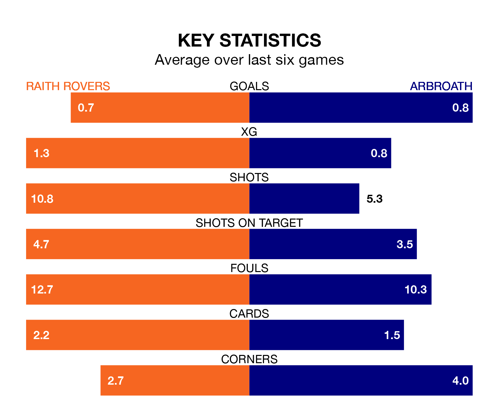

Relegation candidates Arbroath face a challenge away against high-flying Raith Rovers at Stark's Park on Friday.
Arbroath are rooted to the bottom of the Championship table, and have picked up six wins and five draws in their 35 games to date.
Raith, meanwhile, are second in the standings with 66 points, having won 19 and drawn nine, and are six points behind table-toppers Dundee United.
Raith are in mixed form in the Championship, with two wins and two draws from their last six games.
With no wins and six losses over that period, Arbroath's form is much worse – they have taken no points from 18, compared to Rovers' eight.
With 35 goals in 35 games so far this season, the away team are the league's lowest scorers with 1.0 goals per game. And they are conceding more than average, letting in 84 goals at a rate of 2.4 per game.
The hosts, meanwhile, are above average scorers, with 1.5 goals per game, compared to a league average of 1.4. They have conceded 1.2 goals per game.
With Maciej Dabrowski between the sticks, Raith can rely on one of the league's safest pair of hands. He has kept 11 clean sheets in his 33 appearances this season, and only one other 'keeper – Dundee United's Jack Walton – has been able to prevent the opposition scoring on more occasions in the Championship.
In Arbroath's net, Derek Gaston has three clean sheets in 23 games. He has conceded a goal every 45 minutes, 70% more often than the 76 minutes between goals for Dabrowski.
In the last 10 years, Raith and Arbroath have played each other on 22 occasions. Raith won eight of them, Arbroath four, and they drew 10 times.
On average, Raith scored 1.5 goals and Arbroath 1.2 in those matches.
Their last meeting was on March 1, when Arbroath won 3-2 at home.
Raith's last match was on Saturday, a 0-0 draw against Greenock Morton.
Arbroath lost 5-0 against Queen's Park last time out, also on Saturday.
Updated: 12:00 (UTC), 02/05/24